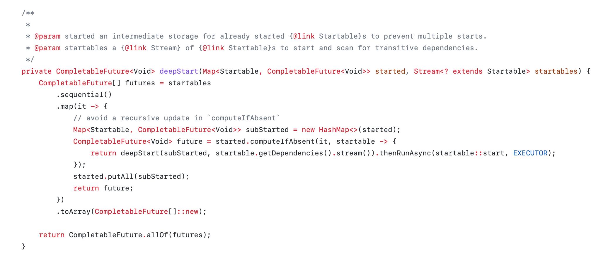
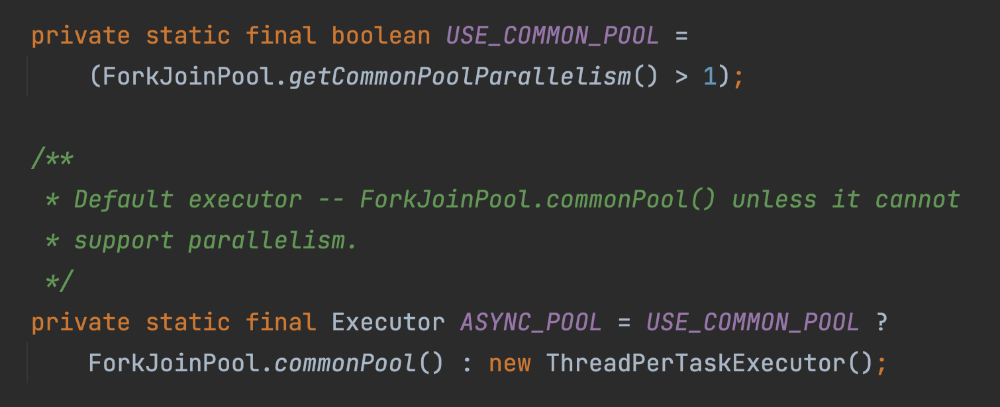
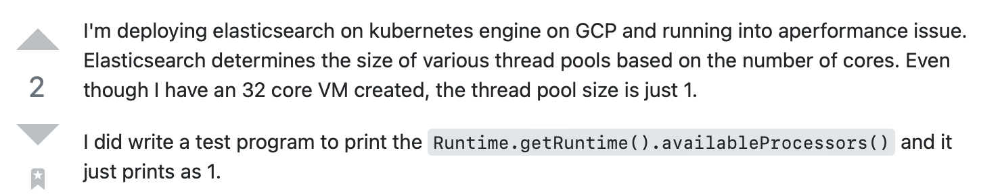
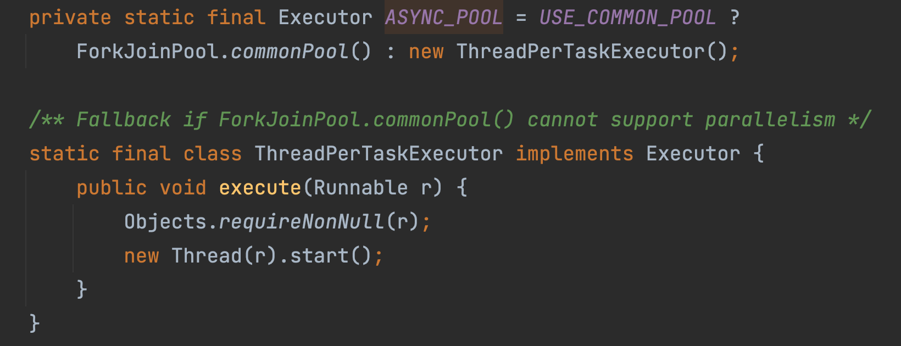

CompletableFuture
and its quirks
Grzegorz Piwowarek
@pivovarit

{ 4comprehension.com }
Lead Architect @ Hazelcast
Trainer @ Bottega IT Minds
@pivovarit
sli.do
#geecon2022
Async
...but how to get the result back?
Future
Spawn point for results of async operations
Future<Integer> result = someAsyncMethod();
Integer integer = result.get();
Future
Spawn point for results of async operations
Future<Integer> result = someAsyncMethod();
// ...
Integer integer = result.get();
Any method can become async
Future<Integer> result = executor.submit(() -> someSyncMethod());
Integer integer = result.get();
Java Future Implementations:
- java.util.concurrent.Future (JDK 1.5)
- java.util.concurrent.CompletableFuture (JDK 1.8)
Future's Limitations
- Blocking API
- Limited exception handling
- A Future can't be manually completed
- Multiple Futures can't be combined
Future<Integer> result = executor.submit(() -> ...);
try {
Integer integer = result.get(); // blocks
} catch (InterruptedException e) {
// handle
} catch (ExecutionException e) {
// handle
}
Before JDK 8: ListenableFuture
ListenableFuture<Result> future = service.query(name);
future.addListener(new Runnable() {
public void run() {
// ...
}
}, executor);
JDK 8: CompletableFuture
CompletableFuture<Integer> cf = new CompletableFuture<>();
cf.complete(1);
CompletableFuture<Integer> cf1 = ...
CompletableFuture<Integer> cf2 = ...
CompletableFuture<Void> processed = cf1
.thenApply(i -> i + 1)
.thenCombine(cf2, Integer::sum)
.thenRun(() -> { /*...*/});
https://youtu.be/-MBPQ7NIL_Y
Cancelling a CompletableFuture
cf.cancel();
CompletableFuture<Void> processed = cf1
.thenApply(i -> i + 1)
.thenCombine(cf2, Integer::sum)
.thenRun(() -> { /*...*/}); // what if I cancel this one?
CompletableFuture<Integer> cf = new CompletableFuture<>();
// ...
cf.cancel();
Cancels a CompletableFuture and not tasks completing it
// @param mayInterruptIfRunning this value has no effect in this
// implementation because interrupts are not used to control
// processing.
Technically, you could hack it...
static final class InterruptibleCompletableFuture<T> extends CompletableFuture<T> {
private volatile FutureTask<?> backingTask;
private void completedBy(FutureTask<Void> task) {
backingTask = task;
}
@Override
public boolean cancel(boolean mayInterruptIfRunning) {
if (backingTask != null) {
backingTask.cancel(mayInterruptIfRunning);
}
return super.cancel(mayInterruptIfRunning);
}
}
Combining Multiple Futures...
CompletableFuture#allOf/anyOf
CompletableFuture<Integer> cf1 = new CompletableFuture<>();
CompletableFuture<Integer> cf2 = new CompletableFuture<>();
CompletableFuture.allOf(cf1, cf2);
CompletableFuture.anyOf(cf1, cf2);
CompletableFuture#allOf
public static CompletableFuture<Void> allOf(
CompletableFuture<?>... cfs) {
return andTree(cfs, 0, cfs.length - 1);
}
- Accepts CompletableFuture<?>... cfs
- Returns CompletableFuture<Void>
- Doesn't shortcircuit on exception
Can you spot the issue?
CompletableFuture#anyOf
public static CompletableFuture<Object> anyOf(
CompletableFuture<?>... cfs) {
return // ...
}
- Accepts CompletableFuture<?>... cfs
- Returns CompletableFuture<Object>
- Doesn't wait for the first successful completion
CompletableFuture vs Threads
Straightforward with JDK 1.5's Future
ExecutorService executor = Executors.newFixedThreadPool(4);
Future<?> future = executor.submit(() -> { /* ... */ });
With CompletableFuture
CompletableFuture<Void> future = CompletableFuture
.runAsync(() -> { /* ... */ }) // 1
.thenRun(() -> { /* ... */ }) // 2
.thenRun(() -> { /* ... */ });
- What thread pool does #1 run on?
- What thread does #2 run on?
Following CompletableFuture#runAsync
The World of Containers
https://stackoverflow.com/questions/57003259/runtime-getruntime-availableprocessors-is-always-returning-1-on-container-op
ThreadPerTaskExecutor
- ForkJoinPool.commonPool() is not much better either
Thread Pools

https://www.baeldung.com/thread-pool-java-and-guava
ForkJoinPool.commonPool()
- Just a single instance
- Good for non-blocking operations
- Used by Stream API
- Used by Arrays.parallel*
- Used by Project Loom
list.stream()
.collect(parallel(i -> foo(i), toList(), executor, parallelism))
.orTimeout(1000, MILLISECONDS)
.thenAcceptAsync(System.out::println, otherExecutor)
.thenRun(() -> System.out.println("Finished!"));
https://github.com/pivovarit/parallel-collectors
Always provide an Executor instance
CompletableFuture<Void> future = CompletableFuture
.runAsync(() -> { /* ... */ }, executor) // 1
.thenRun(() -> { /* ... */ }) // 2
.thenRun(() -> { /* ... */ });
- What thread does #2 run on?
- Either the same thread as #1 or the calling thread
- Not an issue for simple non-blocking processing
Solution: then***Async
CompletableFuture<Void> future = CompletableFuture
.runAsync(() -> { /* ... */ }, executor)
.thenRunAsync(() -> { /* ... */ }, executor)
.thenRunAsync(() -> { /* ... */ }, executor);
CompletableFuture#applyToEither vs Exceptions
CompletableFuture#applyToEither
CompletableFuture<Integer> cf1 = ...
CompletableFuture<Integer> cf2 = ...
CompletableFuture<Integer> either = cf1.applyToEither(cf2, i -> i);
CompletableFuture#applyToEither
CompletableFuture<Integer> cf1 = completedFuture(42);
CompletableFuture<Integer> cf2 = failedFuture(new NullPointerException());
CompletableFuture<Integer> either = cf1.applyToEither(cf2, i -> i);
- 42
CompletableFuture#applyToEither
CompletableFuture<Integer> cf1 = failedFuture(new NullPointerException());
CompletableFuture<Integer> cf2 = completedFuture(42)
CompletableFuture<Integer> either = cf1.applyToEither(cf2, i -> i);
- NullPointerException
Thank You!
https://pivovarit.github.io/talks/completable-future-quirks
Twitter: @pivovarit